Semantic Segmentation
> What is Semantic segmentation?
In short, it is a technique in computer vision that assigns a value to each pixel. It is different from other techniques that count whole objects or instances for example. It can be used for automated driving, medical imaging, or even satellite imaging.
> What are some examples of model architecture for this task?
- U-net
A model with the foundational encoder-decoder architecture characterized by its symmetric U shape, as the name suggests, and direct skip connections that connect the gap between low-level spatial details and high-level semantic context. - Efficient U-net
An upgraded model to the standard U-Net that swaps the traditional encoder for a pre-trained EfficientNet, using compound scaling to achieve higher accuracy with significantly less computational overhead. - Deeplab V3+
A scale-aware architecture that uses dilated convolutions and a spatial pyramid pooling module (ASPP) to see objects at different sizes while maintaining a dense feature map. - SegFormer
A modern Transformer-based model that eliminates the need for positional encodings and uses a simple MLP decoder, offering a highly efficient, scalable, and robust alternative to traditional CNN-based segmentation. - HRNet
A unique model architecture that maintains high-resolution representations in parallel branches throughout the entire network, constantly fusing multi-scale information to preserve better spatial precision. - FC-DenseNet
An architecture that is comprised of dense connections that maximizes feature reuse and gradient flow by connecting every layer within a block to every other layer, resulting in a very parameter-efficient model for precise segmentation.
> Experiment
Let's try running a semantic segmentation task. We have a dataset of Satellite imagery from the city of Amsterdam. We split our data set into the training, validation, and test sets. The dataset contains a 512x512 image with 3 channels (RGB) in a TIFF file format for the image and also the year information attached to each pixel. We can run the experiment using google colab, that has cloud computing and GPU processing which is required extensively to train the models.
> Relabeling
We the first relabel the data for the age component. Currently it is in the form of year (1994 for example), so we relabel into 4 categories for convenience. For values of <1981, we assign a value of 1, for values >=1981 and <2001, we assign a value of 2, then for values >=2001, assign a value of 3. For the background we simply assign a value of 0. Since the values have become so small we can use the QGIS software to view the images.
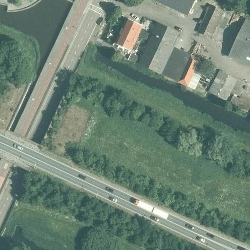
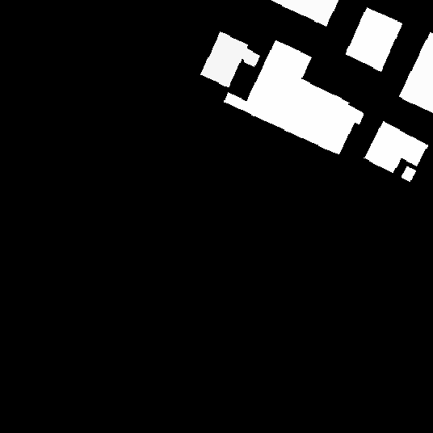
Dataset Sample
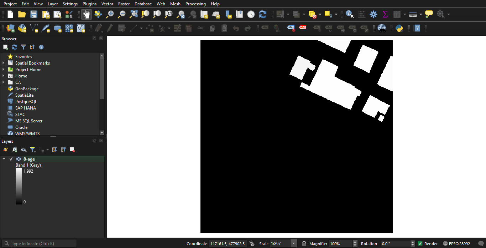
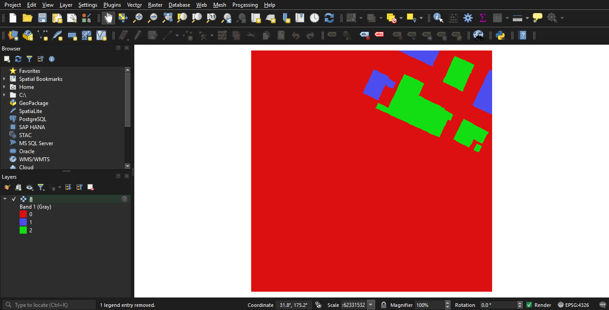
> Importing and data loading
To start our training, we first create the setup and import part of the code. We code to prepare the environment, import frameworks, and initialize global hyperparameters. We first import fundamental PyTorch libraries for neural network design, optimization, and structural plumbing, alongside data tools like numpy, pandas, and scikit-image for managing geographic arrays and reading raw multi-band images. Since we put our dataset on Google Drive, we all the time need to allow access to the dataset, by mounting to Google Drive and establish target paths for tracking training metrics and saving checkpoints. Finally, we instantiate core constants that set the behavior of the network, such as locking the hardware execution path to a CUDA-enabled GPU, designating a small batch size of 4 to manage memory limits, and defining the target segmentation architecture to output four specific channels corresponding to the age categories.
Then we have the dataloading part that translates these raw files into an optimized pipeline using PyTorch's structured ingestion components. It defines a custom AmsterdamDataset class that dynamically checks training, validation, and testing directories, employing file name set intersections to guarantee that every input image perfectly matches its corresponding ground-truth segmentation age mask. When an item is called, the dataset reads the .tiff files, applies an Albumentations transformation pipeline that normalizes the RGB values to ImageNet standards, and converts the data into PyTorch tensors via ToTensorV2(). These datasets are then wrapped inside standard PyTorch DataLoader instances, which automate structural batching, shuffle the training sequence to eliminate ordering bias, and consistently yield paired mini-batches directly to the model during training loops.
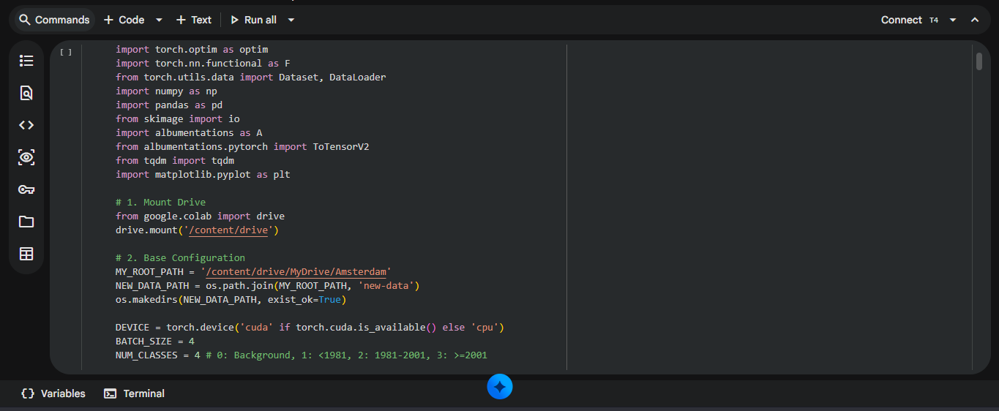
> Model Architecture and Training
To build our model, we construct the architecture cell by cloning the code from a public GitHub repository directly into our active Colab environment and append its directory to our system path so Python can successfully discover and import the custom function for each model architecture that we want to use. We then instantiate our segmentation model configuration, since some model have different versions or backbone used. Finally, we finish configuring this segment by defining the class_weights penalty tensor to handle any pixel imbalances across background elements and historical structures, loading it directly into a standard cross-entropy loss function alongside an AdamW weight decay optimizer to handle gradient steps.
For the training cell we run forty epochs of training and also have checkpoint management. The code automatically scan for an existing progress file to resume training smoothly, restoring model weights, optimizer states, and past performance trackers if a crash occurs or runtime error or gpu limit which occurs often when we use the free tier of colab. We also implemented the Automatic Mixed Precision (AMP) through a PyTorch GradScaler context to save video memory and accelerate math operations by downscaling precision dynamically inside the forward pass. Finally, we execute the standard mini-batch pipeline by running data forward through the architecture, evaluating errors against our weighted cross-entropy criterion, unscaling gradients to safely clip their maximum norms at 1.0 to prevent mathematical instability, and executing backpropagation via the optimizer before applying PyTorch garbage collection at each epoch's conclusion.
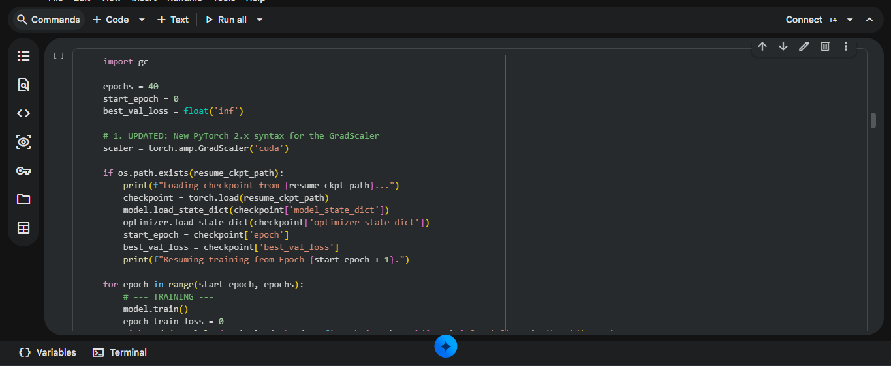
> Testing and Visualization
After training the model, we then evaluate our final performance. Using the test set, we log the final accuracy metrics. We first load the best saved checkpoint weights from our training phase, put the model into evaluation mode, and initialize a global confusion matrix as a numpy array. Since we only want to test final generalization, we run a loop exclusively over the test loader under a gradient-free context, taking the argmax of the model's outputs to extract the predicted class for each pixel and accumulating them into our matrix. Finally, we calculate the final class IoUs, mean Intersection-over-Union (mIoU), and overall accuracy from this matrix, package these scores into a pandas DataFrame, and append or save the results into a CSV file on our drive.
Lastly, for visualization of our model's performance, we create a multi-panel analysis of a sample. We first load our best checkpoint weights, set the model to evaluation mode, and run a strict scanning loop over the validation loader to isolate a specific image patch that contains a specific threshold of all three age building categories. Once a qualifying patch is found, we pass it through a gradient-free forward pass, applying a bilinear interpolation step to automatically correct any resolution mismatches caused by different model architectures before extracting both the argmax predictions and soft probability scores. Finally, we use matplotlib to output a four-panel figure displaying the original satellite image, the ground truth mask with a custom color legend, the categorical model prediction map, and a continuous confidence heatmap.
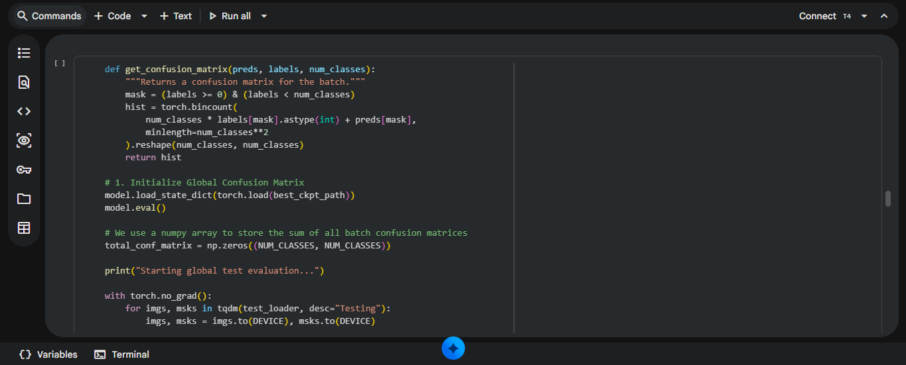
> Results
Here is a summary table of the results:
| Model | mIoU | Overall Acc. | IoU (Background) | IoU (<1981) | IoU (1981--2001) | IoU (>=2001) |
|---|---|---|---|---|---|---|
| Milesial_UNet | 34.98 | 76.59 | 81.87 | 27.80 | 15.29 | 14.97 |
| Efficient_UNet_B0 | 35.48 | 76.58 | 81.25 | 25.39 | 14.52 | 20.74 |
| FC_DenseNet67 | 32.32 | 80.31 | 84.86 | 8.64 | 17.54 | 18.24 |
| DeepLab_v3_Plus_ResNet | 35.29 | 74.94 | 79.08 | 27.28 | 14.67 | 20.11 |
| SegFormer_B0 | 30.29 | 68.54 | 72.13 | 19.03 | 13.27 | 16.73 |
| HRNet_W48 | 34.50 | 75.84 | 81.23 | 23.06 | 15.49 | 18.20 |
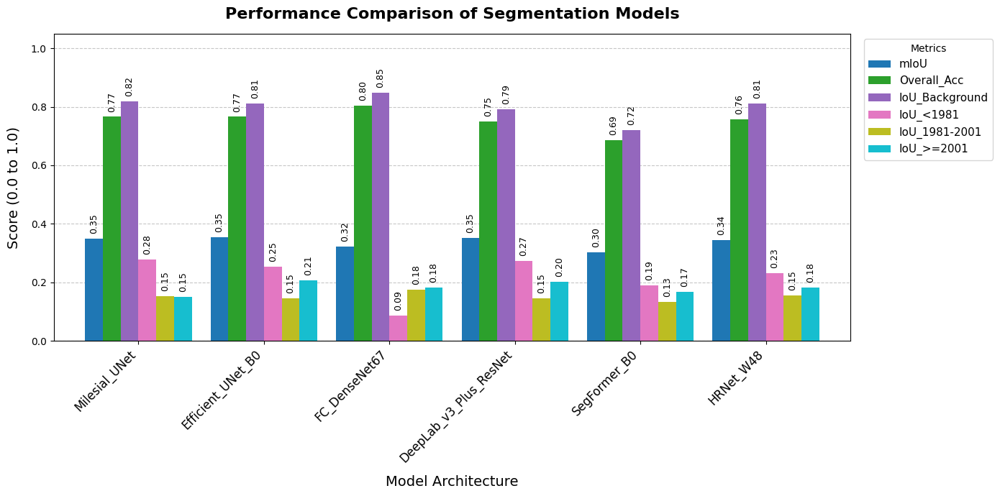
> U-net
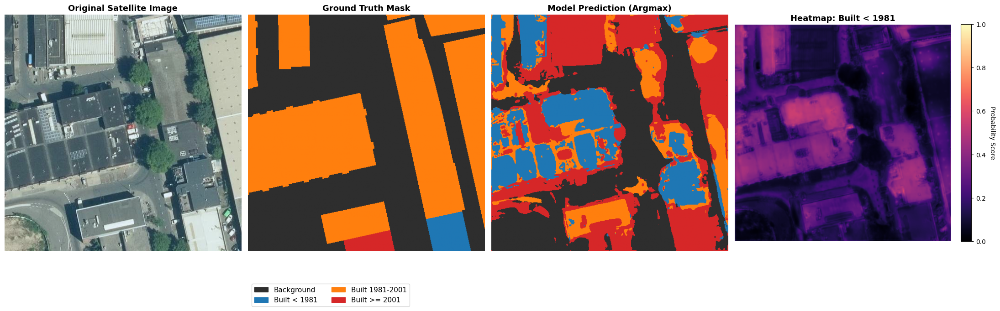
> Efficient U-net
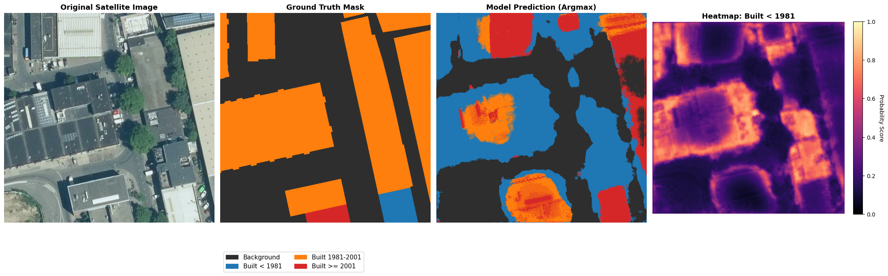
> FC-Densenet
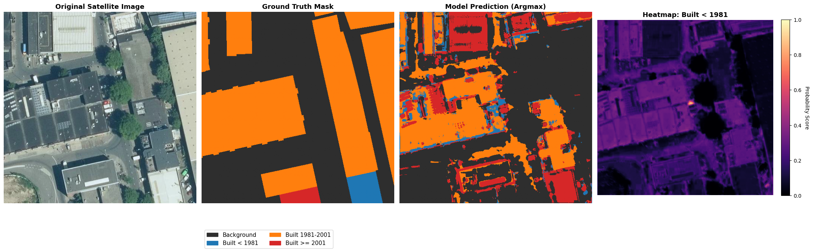
> DeepLabV3
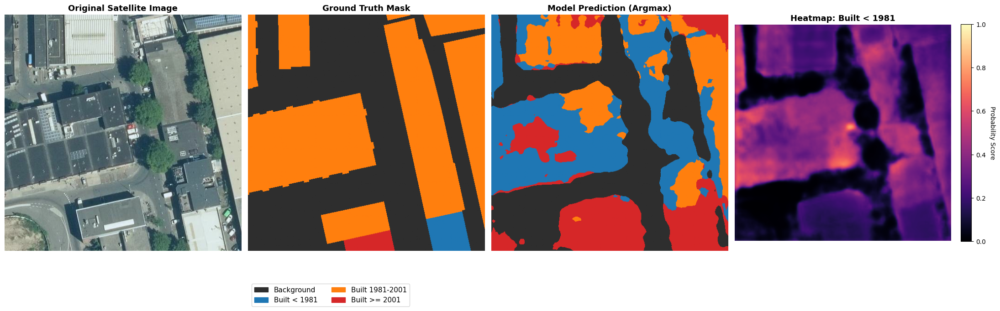
> SegFormer
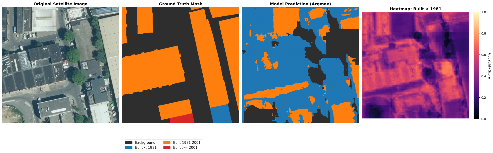
> HRNet
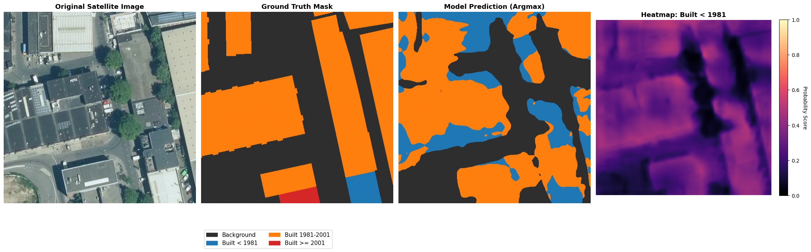
From the results we can see that sometimes there’s a trade-off between overall accuracy and minority-class recognition, which is a common challenge in semantic segmentation. While FC_DenseNet67 achieved the highest overall accuracy at 80.31, a closer look at its class-specific breakdown reveals that this performance is heavily inflated by its strong classification of the background category (84.86 IoU), while severely failing on the scarcer <=1981 building category with a critical IoU drop down to just 8.64. This discrepancy shows why we use mean Intersection-over-Union (mIoU) as a far more reliable benchmark than raw accuracy for imbalanced datasets. In contrast, models like Efficient_UNet_B0 and DeepLab_v3_Plus_ResNet delivered the most robust and balanced performance across the entire dataset, having the highest mIoU values at 35.48 and 35.29, respectively. Showing great IoUs for the 3 building age categories.
Additionally, we can see that traditional convolutional neural network (CNN) architectures incorporating multi-scale feature aggregation or advanced backbones outperformed modern lightweight vision transformers in this specific context. SegFormer_B0 underperformed across all benchmarks, yielding the lowest mIoU (30.29) and overall accuracy (68.54), which suggests that transformer-based models may require substantially larger datasets or specialized hyperparameter tuning to accurately map detailed spatial representations compared to CNN models.